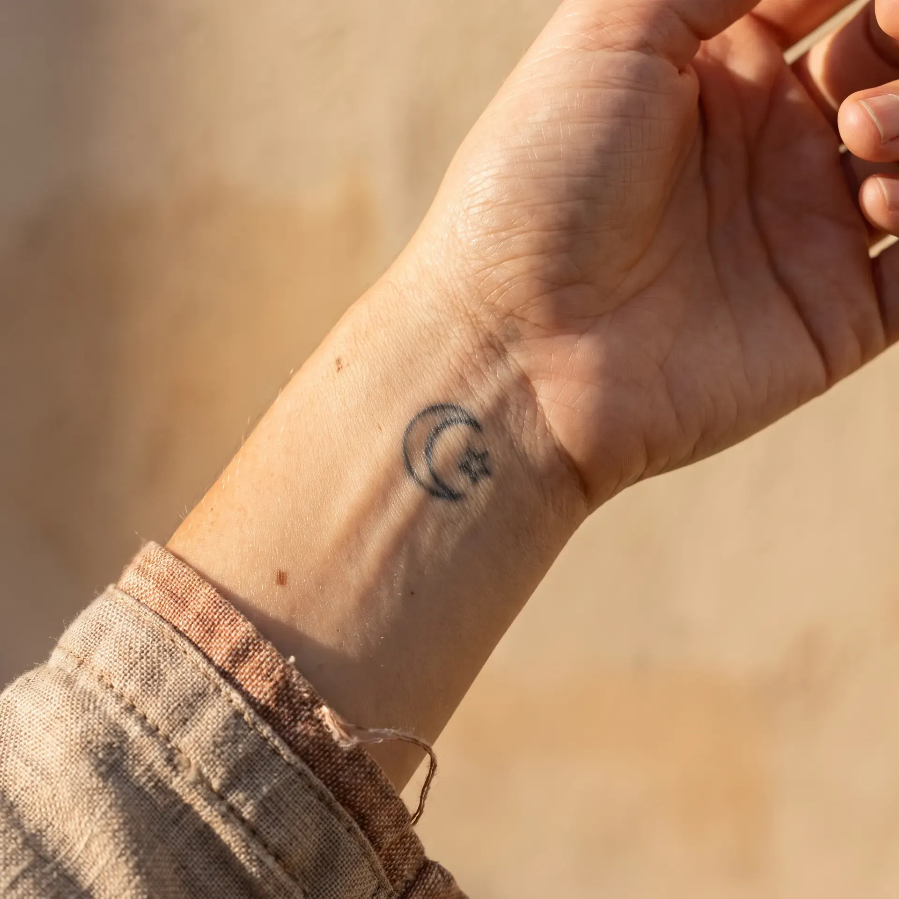
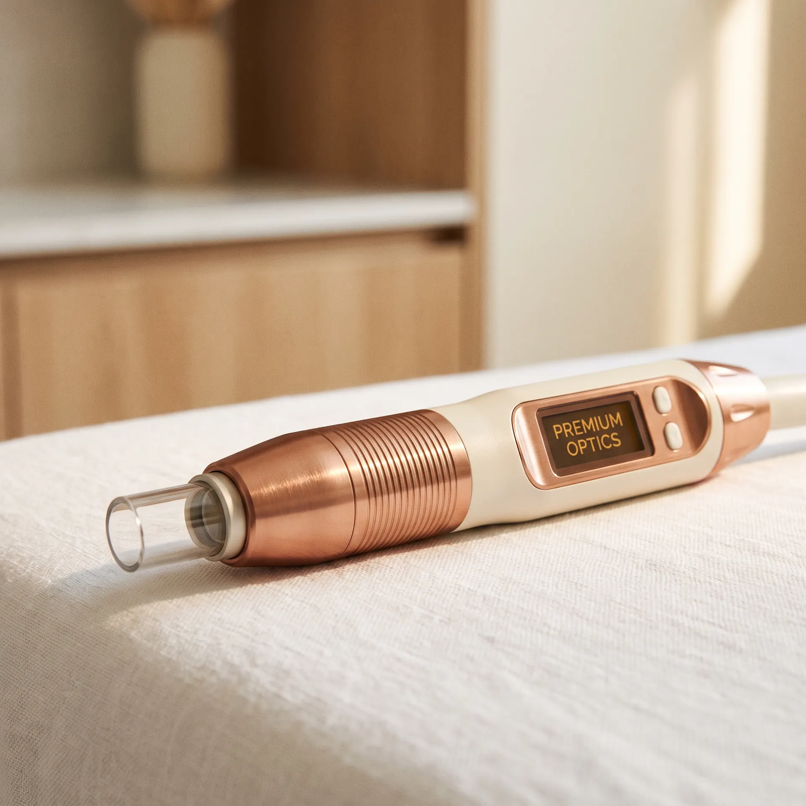

808 nm · 6–8 sesiones
Depilación láser definitiva
La longitud de onda que el folículo piloso absorbe como un imán. Piel suave de verdad, sin retoques cada 3 semanas.
Saber másDepilación definitiva, tatuajes que se van, manchas que se aclaran. Con valoración médica, manos certificadas y tecnología que te explicamos en español.
Vuelves cada 3 semanas. Te aplicaron, te cobraron, saliste en 8 minutos. Nadie te dijo qué máquina usaron ni por qué tantas sesiones. Y ahora no sabes si el láser no funciona o si simplemente te tocó un mal lugar.
Cada servicio empieza con una valoración. Si no eres candidato, te lo decimos. Si sí, te armamos un plan por escrito, con número de sesiones, intervalo, costo total estimado y qué esperar en cada paso.
La longitud de onda que el folículo piloso absorbe como un imán. Piel suave de verdad, sin retoques cada 3 semanas.
Saber másPulsos de una billonésima de segundo que rompen el pigmento por onda de choque. Sin calor, sin cicatriz, en los colores que otros láseres no pueden.
Saber más
Cejas, labios, eyeliner tatuado. Empieza de nuevo sin llevar la marca de lo que se fue.
Saber másManchas del sol, léntigos, melasma con protocolo. Aclara, no promete milagros.
Saber másArrugas finas, piel apagada, luminosidad que se va. El láser le recuerda a tu piel cómo fabricar colágeno.
Saber másLa marca del acné, los poros que ya se notan. No se borra del todo, pero se difumina hasta dejar de ser lo primero que se ve.
Saber másCualquier láser en LaserMed empieza con un médico que ve tu piel, tu historial, tu tipo Fitzpatrick y te dice si eres candidato. Antes de pagar. Si no aplica, te decimos.
Operadores capacitados en este equipo específico, con constancia, supervisados por un responsable sanitario con cédula profesional. No es una franquicia; es un equipo pequeño que se sabe tu nombre.
Te decimos qué te estamos haciendo en cada pulso. No es misterio, es método. Si no aplica para ti, te decimos. Y si no te gusta el plan, no avanzamos.
Lo que vuelve a LaserMed un lugar donde se hacen cosas que otros no pueden.
808 nanómetros. Es el estándar de oro de la depilación láser desde 1998. ¿Por qué? Porque es la longitud de onda que la melanina del folículo piloso absorbe como un imán. La luz entra, el vello la convierte en calor, y destruye la célula madre del folículo. La epidermis, mientras tanto, queda intacta.
Funciona en todo tipo de piel — desde la más clara hasta la más morena — con ajuste de parámetros. Cada sesión destruye entre el 15 % y el 30 % de los folículos activos de la zona. A la sexta sesión, la mayoría de las personas ve una reducción del 80 % o más.
Y una cosa que pocos te dicen: el vello blanco, canoso o pelirrojo muy claro no responde. No tiene melanina. Si ese es tu caso, te lo decimos en la valoración.
Los láseres viejos (Q-Switched) trabajan en nanosegundos. Nuestro láser lo hace en picosegundos: mil veces más corto. Tan rápido que la energía no se convierte en calor sino en una onda de choque. Esa onda fragmenta el pigmento en partículas tan pequeñas que tu cuerpo las elimina por sí solo.
¿El resultado? Menos sesiones. Menos riesgo de quemarte. Menos hiperpigmentación. Y la capacidad de borrar colores que otros láseres no tocan: azul, verde, rojo.
Es la tecnología detrás de la palabra "pico" en todos los consultorios dermatológicos serios del mundo. Pocas clínicas en México la ofrecen.
No es magia, no es "te aplicamos y ya". Es un método que existe para que sepas exactamente qué pasa, cuándo y por qué.
Vienes, te vemos, te preguntamos, vemos tu piel bajo luz directa. Si no eres candidato, te decimos y no avanzamos. Si sí, te explicamos el plan: zonas, sesiones, intervalo, costo total.
Te enviamos por WhatsApp tu plan por escrito. Lo revisas en casa, lo platicas con quien quieras, y si te late, agendamos la primera sesión.
Sesión por sesión, en cabina refrigerada, con música, con quien te explica cada paso. Protección ocular obligatoria, crema anestésica si la necesitas, frío en la zona.
Al séptimo día te escribimos para ver cómo va. Si algo se siente raro, te vemos sin costo. Cuando terminas el plan, valoramos resultados juntos.
No tenemos 20 sucursales. Tenemos una, donde te atendemos nosotros.
"No me gusta recetar lo que no haría en mi propia piel."
"Cada piel es un caso nuevo. Por eso te escucho antes de tocarte."
"Llevo años depilándome. Abrí esto para hacerlo bien."
"No es una franquicia. Es un equipo pequeño que se sabe tu nombre."
Luz natural, una cabina, una sala de espera, una máquina. El espacio está pensado para que vengas, te relajes y te vayas sintiéndote bien.

Estos casos son de pacientes que dieron su consentimiento por escrito para el uso de sus imágenes. Los nombres son alias. Los tiempos son reales. Cada piel responde distinto y no garantizamos el mismo resultado en todos los casos.
El costo total de tu plan te lo decimos en la valoración. Sin sorpresas, sin "preguntas para saber cuánto".
"Si no te encaja el plan, te lo decimos. No vendemos lo que no aplica."
Pedir mi valoración gratuitaTe contesta una voz con IA. Sabe de láser, conoce los planes, agenda tu valoración, resuelve tus dudas. Si prefieres humano, te pasamos con el equipo en horario de atención.
La valoración es gratis, dura 20 minutos, y sales sabiendo exactamente si LaserMed es para ti.
Aviso COFEPRIS vigente · Responsable sanitario con cédula · WhatsApp directo
Te contesta una voz con IA. Resuelve dudas, agenda tu valoración o te transfiere con el equipo.
[Aquí va el widget conversacional de ElevenLabs.
Pega el código del agente cuando esté listo.]